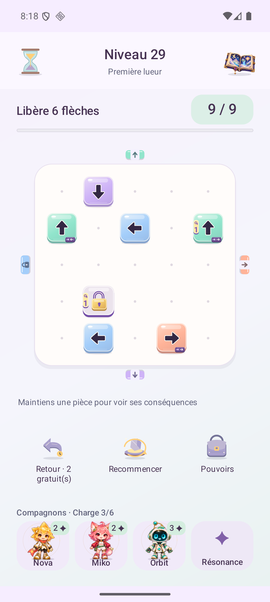
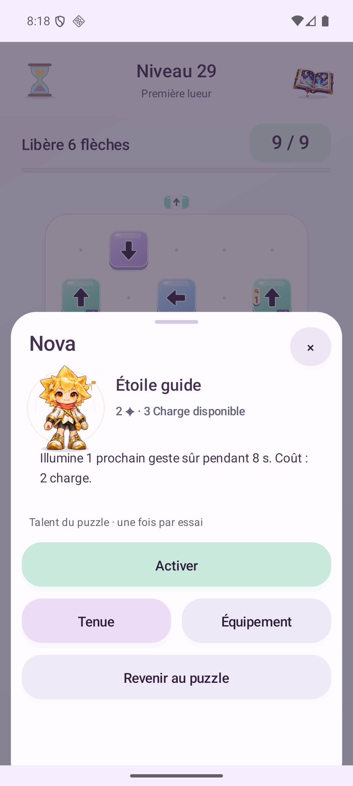
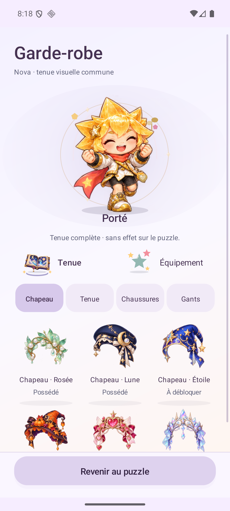
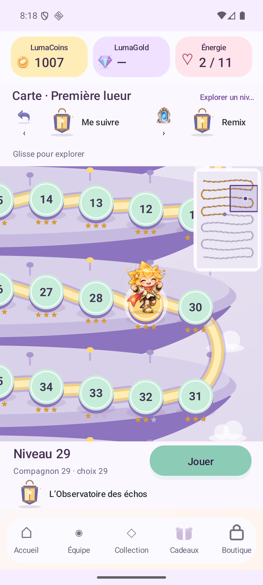

Suis la flèche. Trouve ton chemin.Follow the arrow. Find your way.
Des pièces en relief, des directions nettes et un objectif : libérer le plateau. Trouve la clé, observe ce que le relais change et appelle ton compagnon au bon moment.Sculpted pieces, clear directions and one goal: clear the board. Find the key, see what the relay changes and call your companion at the right moment.
Candidate à essayer · Annonces de test · Achats réels indisponiblesPlaytest candidate · Test ads · Real purchases unavailable
Ton style. Tes talents. Des progrès que tu peux expliquer.Your style. Your skills. Progress you can understand.

Capture Android native non retouchéeUnedited native Android capture
1–3compagnons dans ton équipecompanions in your squad
6familles de talentsskill families
4formes par compagnonforms per companion
10zones sur ta routezones along your journey
LIRE → CHOISIR → AGIRREAD → CHOOSE → ACT
Un geste clair. Un monde qui répond.One clear move. A world that responds.
La direction reste au centre. Chaque signe a sa place.Direction stays at the centre. Every mark has its place.
↗
Le plateau d’abordThe board first
Un objectif, un compteur d’actions et des flèches dessinées comme de petits objets. Les nouveaux essais du Voyage commencent sans préparations feu, glace et eau.One goal, one move counter and arrows shaped like little objects. New Journey attempts start without fire, ice and water preparations.
⌁
La clé et son effetThe key and its effect
La clé porte son signe à gauche ; les relais gardent leur rail en bas. Maintiens une pièce pour examiner ses conséquences avant de choisir. Un coup légal peut fermer une issue utile.The key carries its mark on the left; relays keep their rail below. Hold a piece to inspect its consequences before choosing. A legal move can close a useful exit.
✦
Ton compagnon, sur placeYour companion, right here
Le talent s’ouvre sur le plateau avec son effet et sa Charge. La tenue se teste avant d’appliquer et le retour retrouve le puzzle. L’équipe et l’équipement de jeu se préparent entre les essais.Open a skill over the board to see its effect and Charge. Try an outfit before applying, then return to your puzzle. Prepare your squad and gameplay equipment between attempts.
Les essais déjà sauvegardés gardent leurs anciens éléments ; les expéditions éligibles conservent leurs règles. La carte avec déplacement et minimap, l’Observatoire, la maison et la collection restent accessibles.Saved attempts retain their original elements; eligible expeditions keep their rules. The moving map and minimap, Observatory, home and collection remain available.
JOUE → PROGRESSE → CHOISISPLAY → GROW → CHOOSE
Tu sais ce que tu gagnes.Know what you earn.
L’économie ne doit pas devenir une énigme de plus. La fiche Progression relie les soldes à leurs usages et les compteurs s’animent uniquement lorsque les valeurs changent réellement.The economy should not become another puzzle. Progression links each balance to its purpose, and counters animate only when the actual value changes.
LumaCoins
Gagnés en jouant et en récupérant les cadeaux prêts. Dépensés en bonus, tenues ou rencontres aléatoires à probabilités fixes. Les prix et l’aperçu précèdent la confirmation.Earned in play and from ready gifts. Spend on boosts, outfits or random arrivals with fixed odds. Prices and previews come before confirmation.
XP du joueurPlayer XP
Une première réussite donne de l’XP. Chaque tranche de 120 augmente le niveau joueur. Rejouer un plateau déjà récompensé ne redonne pas cette XP.A first clear earns XP. Every 120 raises player level. Replaying a previously rewarded board does not grant that XP again.
Copies et formesCopies and forms
Les copies font monter le compagnon. Ses formes changent aux niveaux 1, 3, 6 et 10. Les talents de puzzle gardent leurs effets indiqués. Une expédition peut viser une copie précise.Copies raise companion level. Forms change at levels 1, 3, 6 and 10. Puzzle skills retain their stated effects. Expeditions can target a specific copy.
LumaGold
Monnaie du compte séparée des Coins. Un solde inconnu reste indisponible. Les achats réels sont fermés dans cette candidate ; les soldes de test Lab restent isolés.Account currency separate from Coins. An unknown balance remains unavailable. Real purchases are closed in this candidate; Lab test balances stay isolated.
Énergie de session : un plafond qui progresse de 10 à 16, +1 toutes les 10 minutes. Agrandir le plafond ne remplit pas le compteur. Un nouvel essai éligible coûte 1 ; reprendre le même essai est gratuit. La Charge des talents reste distincte. La recharge de 10 pour 50 Gold est réservée aux tests Lab, à zéro énergie.Session energy: capacity grows from 10 to 16, +1 every 10 minutes. A larger capacity does not fill the counter. An eligible new attempt costs 1; resuming the same attempt is free. Talent Charge stays separate. The 10-energy refill for 50 Gold is limited to Lab tests at zero energy.
Les niveaux U1–10 conservent leurs récompenses et prix de base. Une courbe logarithmique porte les premières récompenses jusqu’à ×2 au niveau U1000, et les prix de base des bonus jusqu’à ×1,4 avant la remise d’avatar. Deux Undo sont gratuits par nouvel essai ; ensuite, le prix en Coins dépend du niveau et du nombre de retours payants, avec un plafond de 40, affiché et confirmé avant chaque retour. Le coup annulé reste compté.U1–10 keep their base rewards and prices. A logarithmic curve takes first-clear rewards up to ×2 at U1000 and base boost prices up to ×1.4 before the avatar discount. Two Undos are free per new attempt; later Undo Coin prices depend on level and paid-Undo count, capped at 40, shown and confirmed before each Undo. The original move stays counted.
Les probabilités de rencontre sont fixes. Un doublon ne rapproche pas d’un résultat rare. Progression et Coins restent sur cet appareil ; la connexion Google ne synchronise pas la sauvegarde.Arrival odds are fixed. A duplicate does not bring a rare result closer. Progress and Coins stay on this device; Google sign-in does not synchronize the save.
À EXPLORER DANS TON NAVIGATEUREXPLORE IN YOUR BROWSER
Déplace la vue. Observe les liens.Move the view. Follow the links.
Choisis un niveau, déplace la caméra et retrouve le compagnon. Dans Clés, sélectionne une clé pour révéler ses serrures, puis déclenche explicitement son trajet et leur ouverture.Choose a level, move the camera and find the companion. In Keys, select a key to reveal its locks, then explicitly trigger its travel and their opening.
Une démo schématique indépendanteAn independent schematic demo
État fictif : ce n’est ni une capture Android ni la partie native complète. Aucun paiement, compte, gain ou fichier Android n’est modifié.Fictional state: this is neither an Android capture nor the complete native game. No payment, account, reward or Android file changes.
De l’avatar à l’aventure.From avatar to adventure.
Plateau, talent contextuel, tenue et carte : captures de la candidate exacte 1.23.0-rc2, code 31, en français et en anglais.Board, contextual skill, outfit and map: captures from exact candidate 1.23.0-rc2, code 31, in French and English.
Des conséquences lisiblesReadable consequences
Le retour montre la cause immédiate d’un blocage ; un coup légal peut encore fermer une issue utile.Feedback shows the immediate cause of a block; a legal move can still close a useful exit.

Un talent à portée de mainA skill close at hand
Lis l’effet et son coût, puis reviens au même puzzle.Read the effect and cost, then return to the same puzzle.

Essaie. Puis choisis.Try it. Then choose.
La tenue reste en essai jusqu’à Appliquer. Annuler retrouve le look porté.An outfit stays a try-on until Apply. Cancel restores the worn look.

Un chemin à suivreA path to follow
Compagnon, destination et caméra ont des repères distincts. Glisse la carte ou touche la minimap pour explorer.Companion, destination and camera have distinct markers. Drag the map or touch the minimap to explore.
Captures Android natives non retouchées. Les contrôles techniques et simulations ne mesurent ni le plaisir, ni la rétention, ni le confort sur tous les téléphones.Unedited native Android captures. Technical checks and simulations do not measure enjoyment, retention or comfort on every phone.
UN PETIT MONDE DE PERSONNALITÉSA LITTLE WORLD OF PERSONALITIES
Trouve celui qui te ressemble.Find a companion. Make it your own.
24 compagnons Luma et 13 interprétations Mini LoL. De face, de dos, en plein saut ou dans une stance bien à eux : explore les dessins réellement présents dans cette candidate.24 Luma companions and 13 Mini LoL interpretations. Front, back, mid-jump or in a signature stance: explore the actual drawings included in this candidate.
✦
37 personnalités. Laquelle vient avec toi ?37 personalities. Who is coming with you?
Nova
Collection LumaLuma collection
Les aperçus se chargent à ton choix, une planche à la fois. Les niveaux visuels 1, 3, 6 et 10 montrent les quatre formes ; les explorer ici ne débloque rien dans ta partie.Previews load when you choose, one sheet at a time. Visual levels 1, 3, 6 and 10 show the four forms; exploring them here does not unlock anything in your game.
Mini LoL est un fan art non officiel de personnages appartenant à Riot Games. Riot n’approuve ni ne sponsorise ce prototype. Aucune autorisation pour cette intégration n’a été vérifiée.Mini LoL is unofficial fan art of characters owned by Riot Games. Riot does not endorse or sponsor this prototype. No permission for this integration has been verified.Politique officielle RiotOfficial Riot policy · NoticesNotices
PRENDS UN INSTANTTAKE A MOMENT
Chaque lieu a sa couleur.Every place has its own sound.
Les quatre extraits de la 1.17 restent disponibles, à lancer quand tu le souhaites. Rien ne démarre automatiquement.The four 1.17 previews remain available for you to start whenever you like. Nothing plays automatically.
AventureAdventure
Extrait de 10 secondes10-second preview
MaisonHome
Extrait de 10 secondes10-second preview
CollectionCollection
Extrait de 10 secondes10-second preview
AtelierWorkshop
Extrait de 10 secondes10-second preview
Rendus du synthétiseur du jeu en 1.17, au volume musical par défaut de 0,27. Ce ne sont pas des enregistrements de téléphone. Chaque extrait a une fin fondue pour cette écoute.Rendered by the 1.17 game synthesizer at its default music gain of 0.27. These are not phone recordings. Each preview has an ending fade for this listening sample.
LUMA LAB · 1.23
Le parcours à l’épreuve.The journey under examination.
8 000 trajectoires synthétiques sur le moteur 1.23. Causes visibles, talents et énergie examinés séparément. Zéro participant humain.8,000 synthetic trajectories on the 1.23 engine. Visible causes, skills and energy examined separately. Zero human participants.
Ces agents ne voient pas les graphismes et ne prouvent ni plaisir ni rétention.These agents do not see the artwork and establish neither enjoyment nor retention.Laboratoire 1.22 et archivesLab 1.22 and archives
À TOI DE JOUERYOUR TURN TO PLAY
La prochaine île t’attend.Your next island is waiting.
Distribution directe en APK. Les annonces restent en mode test ; les services et transactions réels ont leur qualification séparée. Aucune publication Play n’est impliquée.Direct APK distribution. Ads remain in test mode; live services and transactions require separate qualification. No Play publication is implied.